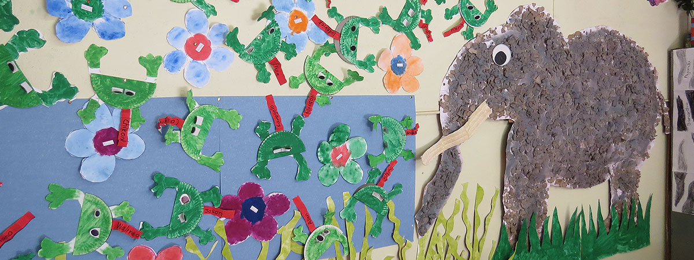
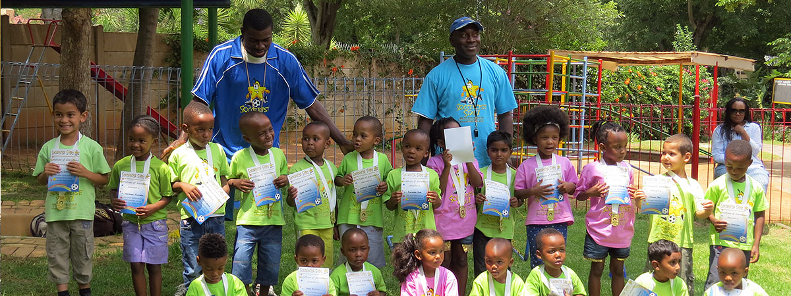
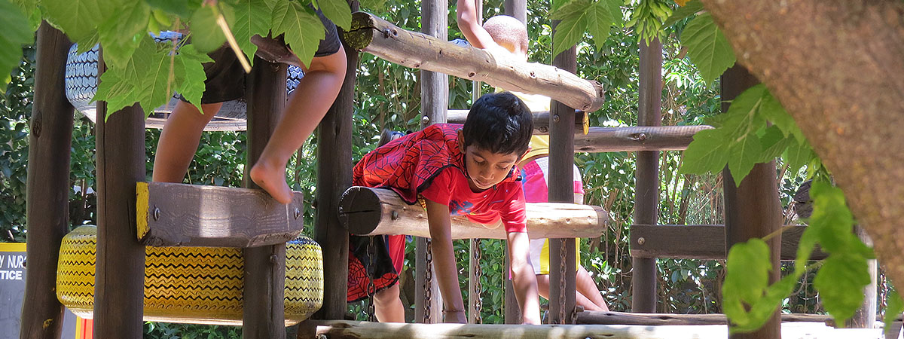
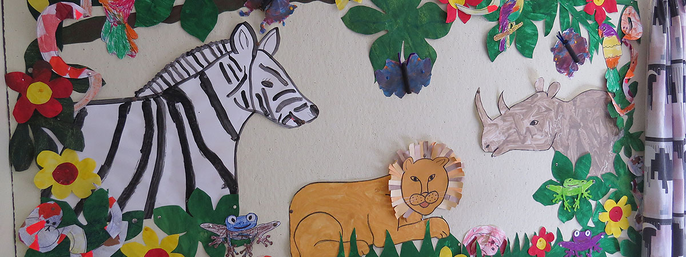
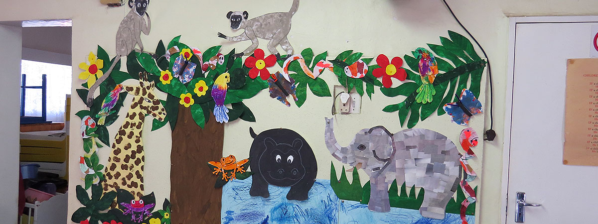
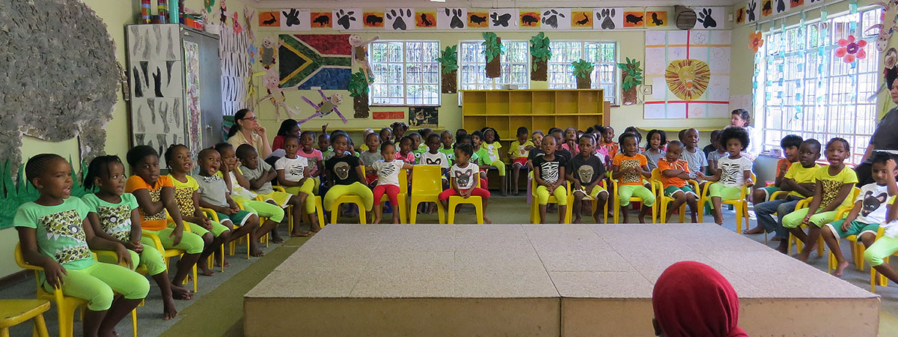
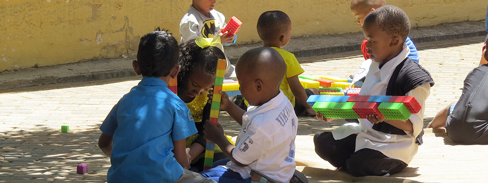

Half-Day Programme
07:30 – 13:30
A gentle, structured morning that includes a nutritious mid-morning snack of sandwiches, fruit and juice.

Est. 1952 · Bramley, Johannesburg
For generations, Bramley Nursery School has nurtured young learners in the heart of Johannesburg's northern suburbs — a safe, caring home away from home where children play, discover and grow.


About our school
Founded in 1952, Bramley Nursery School is one of Johannesburg's oldest and most respected nursery schools. Our modern facilities have seen generations of young learners pass through our doors, benefitting from our unique blend of traditional and contemporary teaching methods.
We embrace the rich diversity of our student body, welcoming children from all ethnic and cultural backgrounds. Our caring staff and teachers create a compassionate environment where every child's well-being and education come first — we play, learn and grow together.
Programmes
Children are welcomed from the age of two-and-a-half years, provided they are fully toilet trained. Choose the programme that works for you.

07:30 – 13:30
A gentle, structured morning that includes a nutritious mid-morning snack of sandwiches, fruit and juice.

Until 17:00
Extends to a cooked lunch, nap time and an afternoon snack, with supervised care until 17:00.

From 2½ years
Programmes designed around specific age groups so every child gets attention that matches their stage.
Enrichment
At Bramley Nursery School, learning isn't confined to four walls. We offer a diverse range of activities to enrich your child's experience and spark their curiosity.
For more information about these activities and any new offerings, please contact the school directly.

Gallery
A glimpse of the everyday moments — the painting, the play, the discovery.
Get in touch
We'd love to show you around and answer any questions about our programmes, fees and daily routine. Reach out and we'll be in touch.